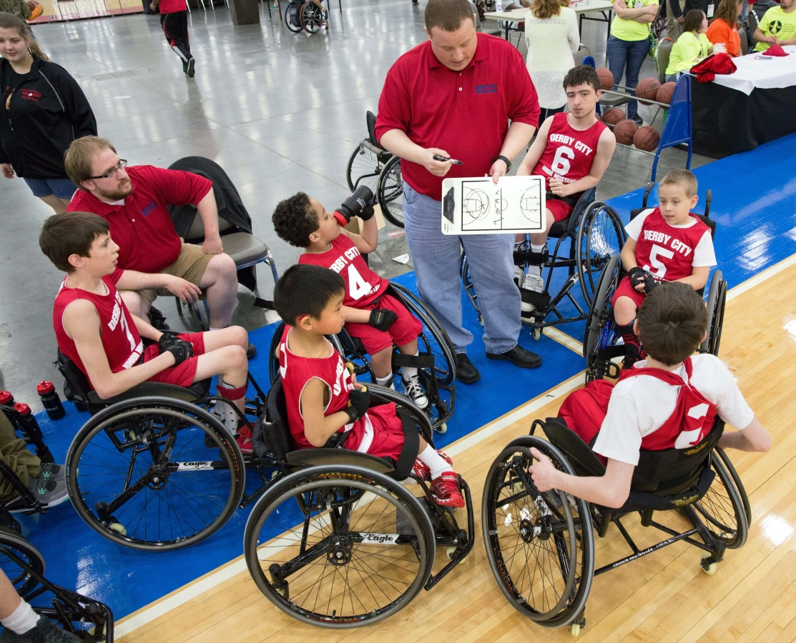
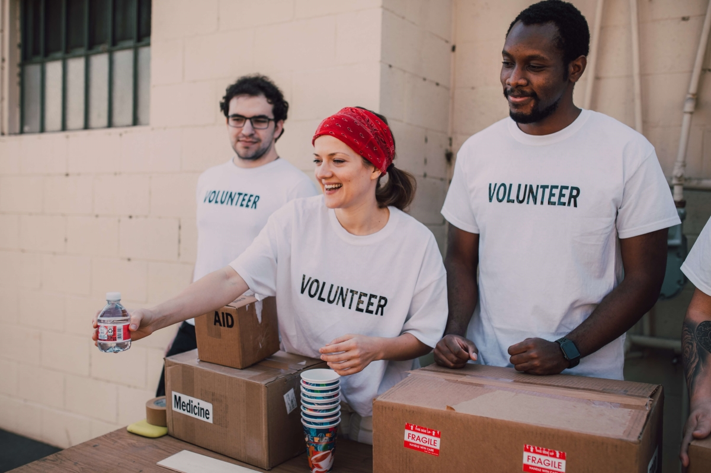

VOLUNTEER OPPORTUNITIES

Volunteers are all ages and their commitments can range from an afternoon to a lifetime. From China to the United States, Ghana to Singapore, Australia to Paraguay, Ireland to India, Special Olympic volunteers are helping to bring out the champion in every Special Olympics athlete. Special Olympics would not exist today—and could not have been created—without the time, energy, commitment and enthusiasm of our volunteers. We owe so much to these millions of people who find the time to make the world a better place. If you want to be a volunteer, get in touch with Special Olympics near you.
If you want to be a volunteer, get in touch with Special Olympics near you.
Volunteers include the local coach who works with athletes many times a week. Or the people who help organize and plan our World Games every two years. Or the photographers who take the most amazing pictures of our athletes in action. All around the world, Special Olympics training, competitions and other events are happening 365 days a year. There is always something interesting to do!

A Special Olympics event is about transforming lives, including your own. It’s about a spirit of giving and teamwork. It's about making your community and neighborhood a more welcoming and accepting place for people of all abilities. It’s also about creating lifelong friendships and finding a new way of thinking about others.